NumPy, Pandas, Scikit-learn, Matplotlib
Darshil Vaja
Machine Learning Engineer
I build clean, practical and production-style ML projects using Python, machine learning, computer vision, RAG systems and deployment workflows.
About Me
I am a Computer Science and AI/ML student focused on building practical machine learning applications that solve real problems. My work covers predictive modeling, computer vision, document Q&A systems, APIs, testing and CI/CD workflows.
I like creating complete project pipelines instead of only notebooks — from preprocessing and training to evaluation, clean documentation and deployment-ready structure.
5+ML Projects
AI/MLPrimary Focus
PythonMain Stack
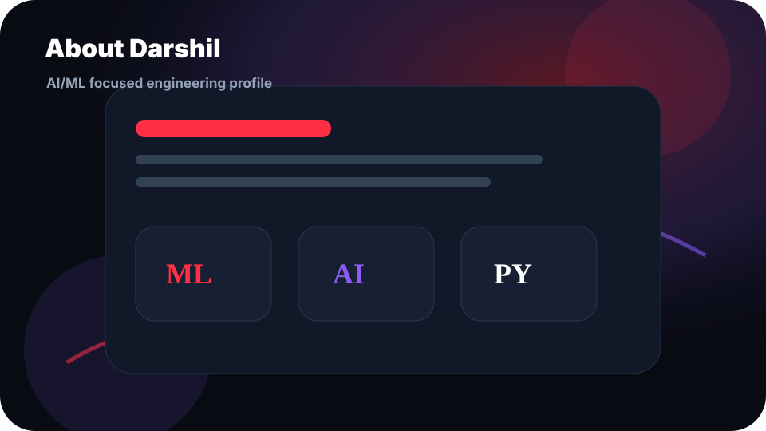
Skills & Tools
A focused stack for building ML applications, computer vision systems and production-style project workflows.
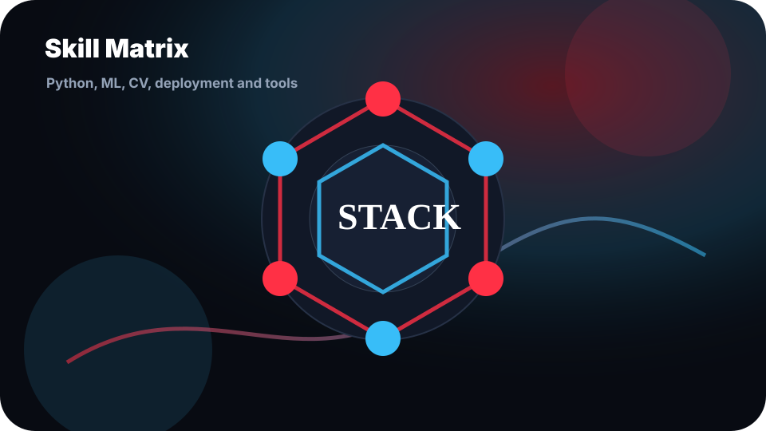
Classification, Regression, TensorFlow, Keras
OpenCV, YOLOv8, image processing pipelines
FastAPI, Streamlit, testing and API structure
GitHub Actions, Pytest, clean project workflows
Git, GitHub, VS Code, Jupyter, Kaggle
RAGLLMDocument AI
RAG-based Document Q&A System
Document upload, semantic retrieval and contextual answer generation using a Retrieval-Augmented Generation workflow.
View GitHub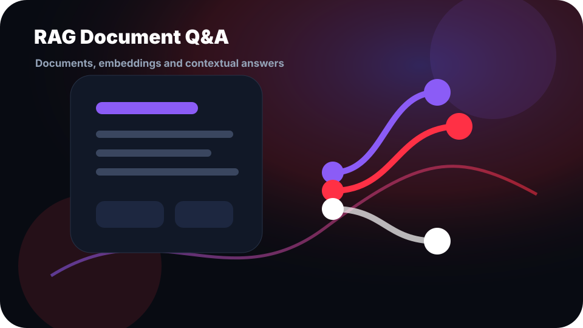
How it works
Documents are processed into chunks, converted into embeddings and searched semantically. The most relevant context is passed to the generation layer to produce grounded answers.
- Upload and process documents
- Generate embeddings and store vectors
- Retrieve relevant chunks for each query
- Return contextual answers through an interface
Python · LangChain · Vector DB · Embeddings · Streamlit
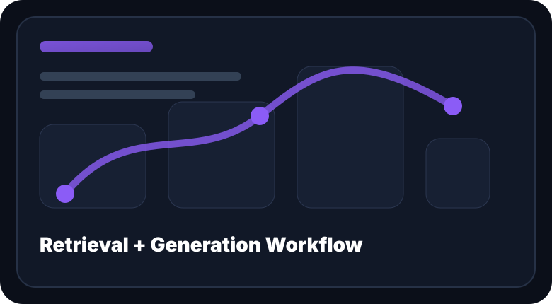
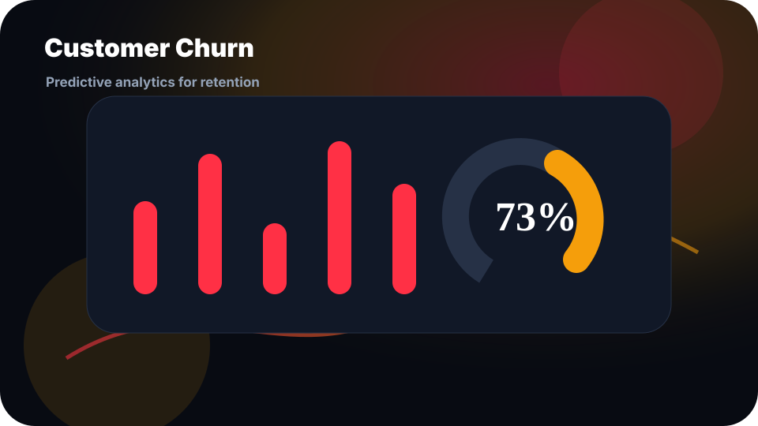
ClassificationFastAPICI/CD
Customer Churn Prediction
Predicts whether a customer is likely to churn and converts business data into actionable retention insights.
View GitHubProject flow
The project includes data preprocessing, model training, API integration, testing and GitHub Actions for a production-style ML workflow.
- EDA and preprocessing pipeline
- Classification model training
- FastAPI prediction endpoint
- Pytest and GitHub Actions integration
Python · Scikit-learn · Pandas · FastAPI · Pytest · GitHub Actions
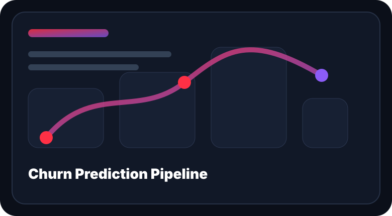
Finance MLImbalanced DataRisk
Credit Card Fraud Detection
Detects fraudulent transactions using machine learning with focus on recall, precision and probability-based risk scoring.
View GitHubModel focus
This project focuses on fraudulent transaction classification, imbalanced data handling and meaningful evaluation metrics for high-risk prediction tasks.
- Handled class imbalance
- Compared classification models
- Evaluated precision, recall and ROC-AUC
- Generated prediction probabilities
Python · Scikit-learn · Pandas · NumPy · Matplotlib
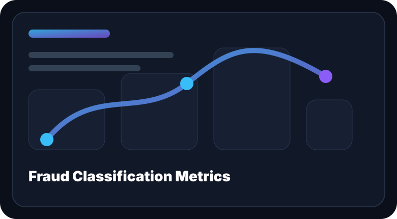
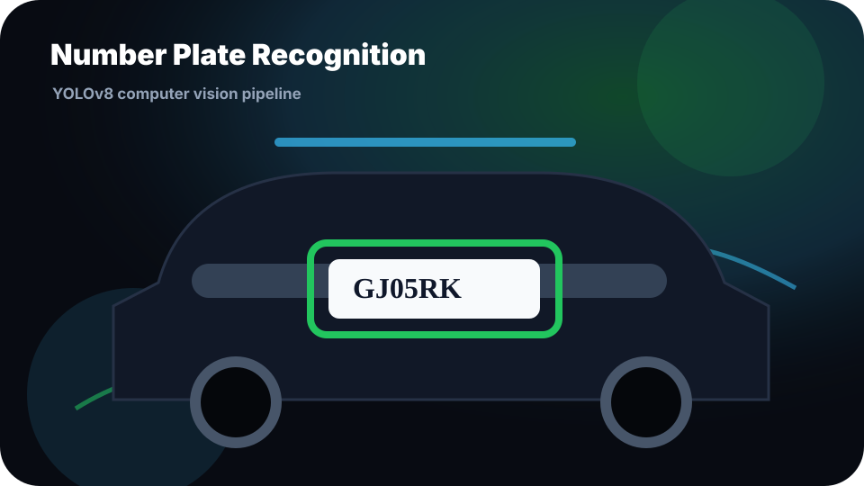
Computer VisionYOLOv8Detection
Vehicle Number Plate Recognition
Computer vision project that detects vehicle number plates from images using YOLOv8 and produces structured outputs.
View GitHubDetection pipeline
The system uses a YOLOv8 detection pipeline for image-based plate localization and can be extended into a Streamlit or API-based interface.
- YOLOv8 object detection model
- Image preprocessing and prediction
- Structured output generation
- Ready for future UI integration
Python · YOLOv8 · OpenCV · Pandas
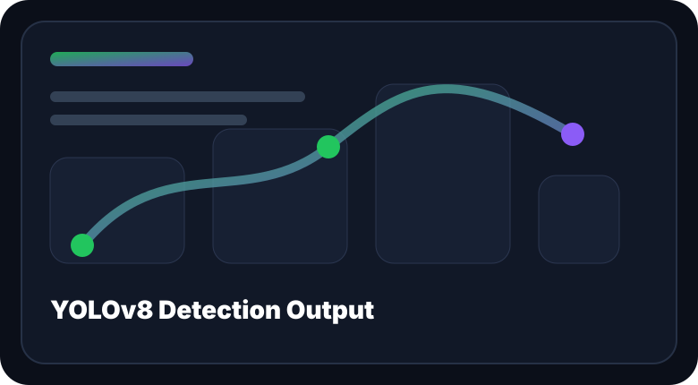
RegressionEDAPrediction
House Price Prediction
Regression-based ML project for predicting housing prices using structured data, preprocessing and model evaluation.
View GitHub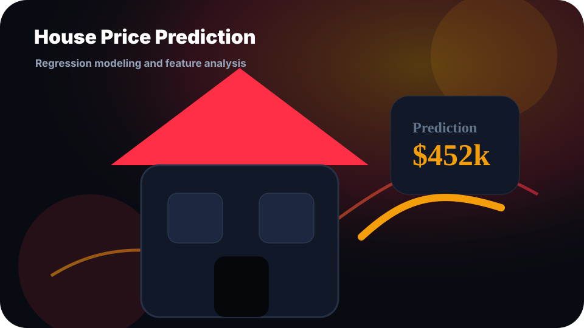
Regression workflow
The project covers the complete supervised learning workflow from exploratory analysis and feature engineering to model training and evaluation.
- Exploratory data analysis
- Feature engineering and preprocessing
- Regression model comparison
- Evaluation using regression metrics
Python · Scikit-learn · Pandas · NumPy · Matplotlib
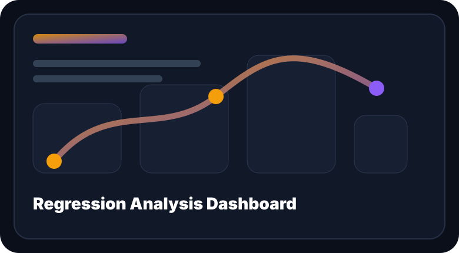
Let’s build something intelligent.
Open to Machine Learning Engineer, AI/ML Engineer, Data Science and Python Developer roles.